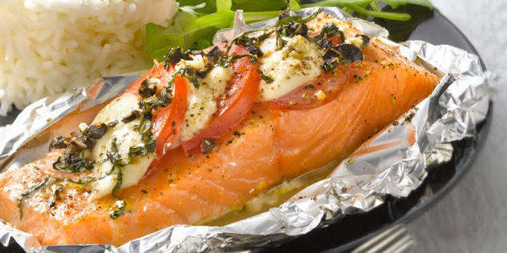

Papillotes de saumon
Ingredients
4×
- 1 pavé de saumon
- sel
- poivre
- oignon
- beurre
- 1 c. à s. de crème
- 0.5 c. à c. de curry
- 1 c. à s. de miel
- 3 asperges
- 25 g de Boursin
- 1 filet d'huile d'olive
- aneth

Préparation
Étape 1
Pour chaque papillote, poser 1 pavé de saumon sur une feuille de papier cuisson. Ajouter du sel et du poivre.
Étape 2
Garnir au choix (quantités par papillote) :
- Miel-curry : oignon rissolé au beurre, 1 c. à s. de crème, 0.5 c. à c. de curry et 1 c. à s. de miel.
- Asperges-boursin : 3 asperges, 25 g de Boursin en cubes, 1 filet d'huile d'olive et de l’aneth.
Étape 3
Fermer les papillotes et cuire environ 20min à 210ºC.